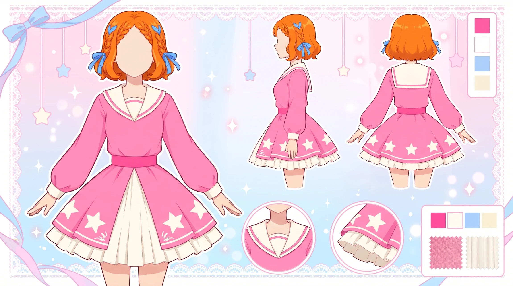
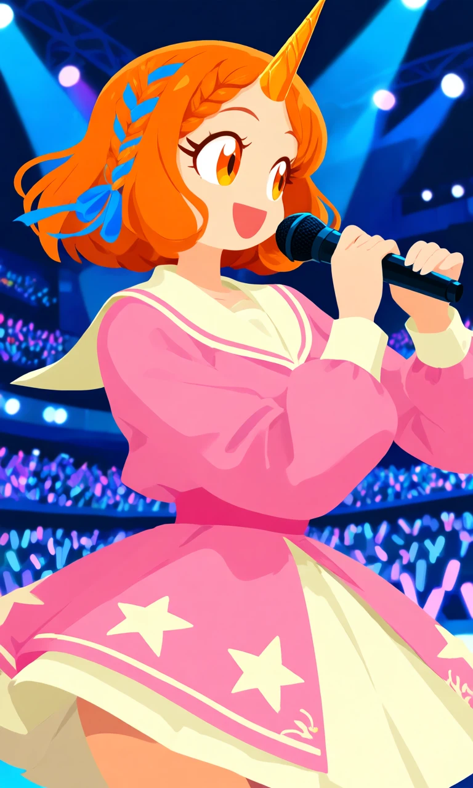
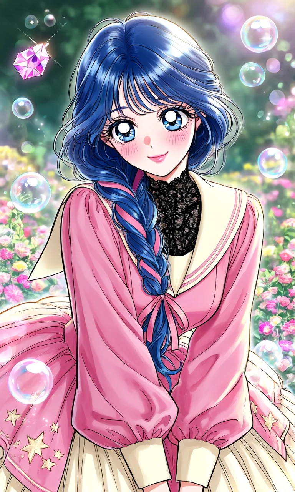

Starboard Sweetheart

Outfit Prompt
She is wearing a pink dress, with cream sailor collar with pink trim. She has long puffy pink sleeves with cream cuffed. The pink skirt has cream stars embroidery on and a cream underskirt giving volume. Her hair is in a single braid with a blue ribbon braided in.
Outfit Examples



